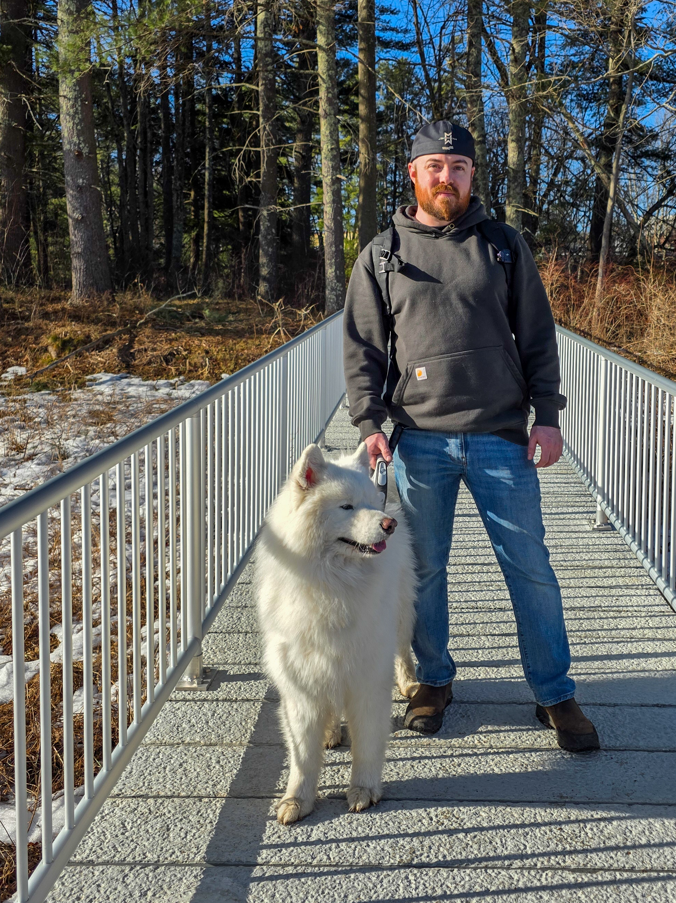

My name is David Boulos. Before becoming a Software Engineer, I spent 15 years as an automotive technician while earning my Computer Science degree at the University of Massachusetts Lowell. The fast-paced, demanding nature of my work always keeps me constantly engaged. This has opened me up to the hobby of photography — a way to slow down, appreciate fleeting moments, and preserve their unique beauty.
In my spare time, you’ll find me wandering the scenic hills of New Hampshire with my Samoyed by my side or casting a line from my kayak. It gives me an opportunity to have interesting encounters and see fascinating scenes. Exploring the wilderness and immersing myself in nature has always been a source of inspiration.
As a wildlife photographer, I strive to capture the untamed beauty of the natural world, telling visual stories that evoke awe and appreciation. Even the tiniest creatures carry immense personality — something that comes to life through the lens.
I hope that now that you're here, you’ll see these moments as beautiful as I did when I captured them.